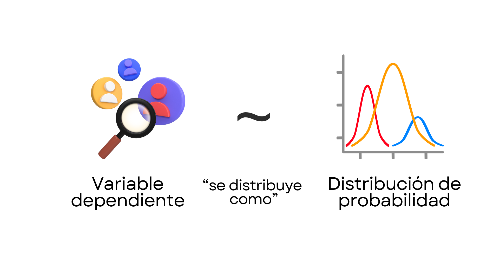
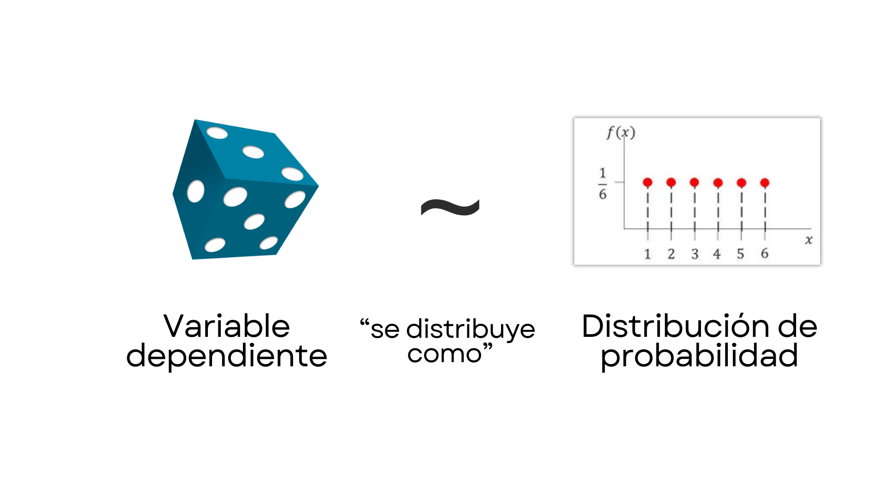
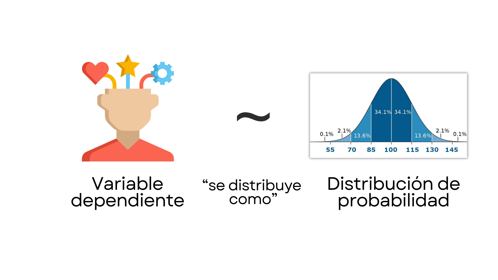
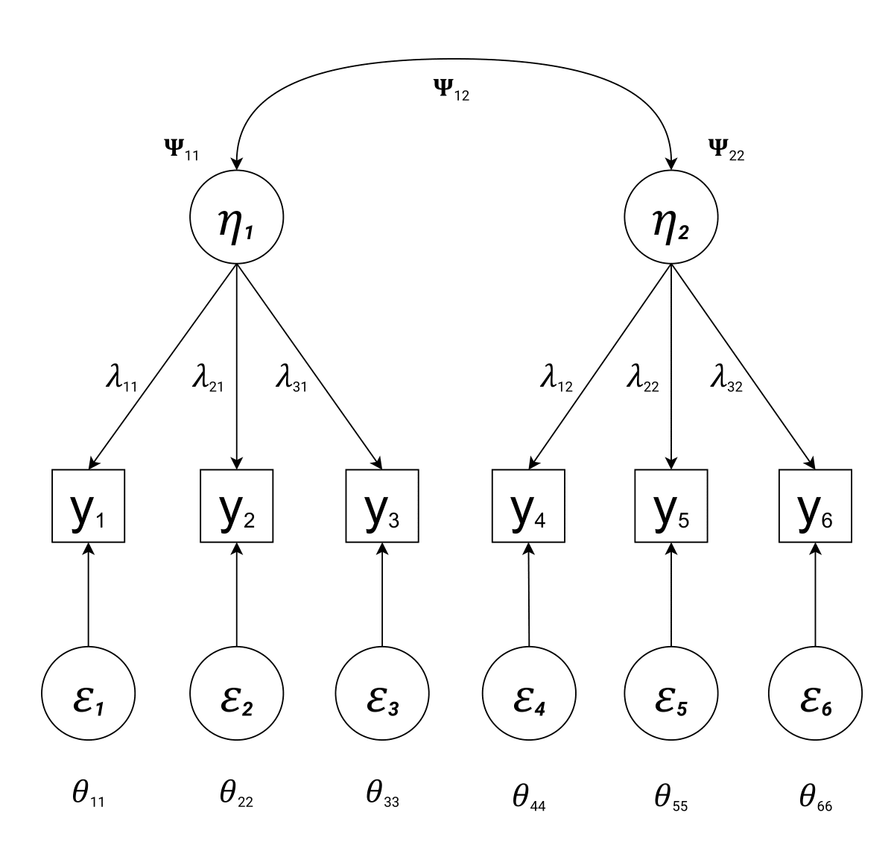
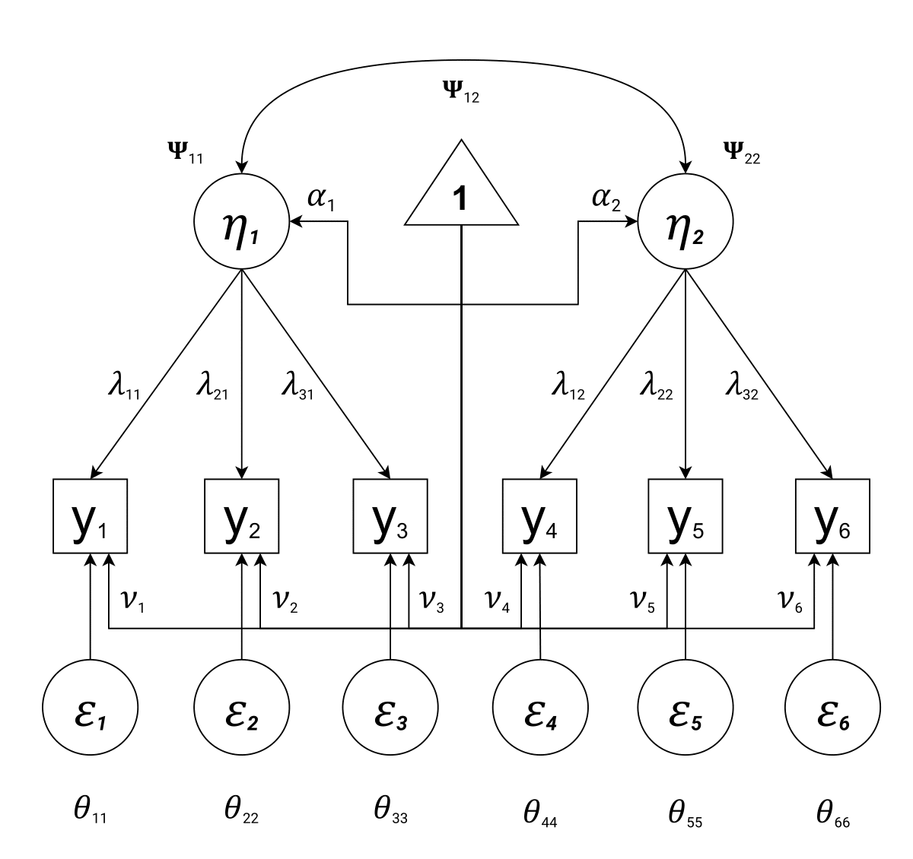

Más Allá de Máxima Verosimilitud
Introducción a la Psicometría Bayesiana
![]()
February 27, 2025
Índice
- Universo frecuentista, multiverso bayesiano
- Método de los momentos y máxima verosimilitud
- Estimación bayesiana
- Introducción a la psicometría bayesiana
- Estimación a través de
{blavaan}- Prior predictive checks
- Convergencia y eficiencia
- Bondad de ajuste
- Comparación de modelos
- Posterior predictive checks
- Estimación a través de Stan y
{cmdstanr}
Universo frecuentista, multiverso bayesiano
Frecuentismo: ¿qué edad tenéis?
- La media de edad es una cantidad fija, pero desconocida (\(\mu_{\text{edad}}\)).
- El objetivo es estimar \(\mu_{\text{edad}}\) usando una muestra aleatoria.
- Elegimos un estimador: la media muestral.
- Cuantificamos la incertidumbre: el error típico de la media (SE).
- Usamos el SE y construimos un intervalo de confianza (IC) para inferir el valor de \(\mu_{\text{edad}}\).
- Un frecuentista concluirá:
- La media de edad estimada es \(\hat\mu_{\text{edad}}\) con un IC de \([a,b]\).
- Si repetimos este experimento infinitas veces, el IC contendrá el valor de \(\mu_{\text{edad}}\) en el 95% de los casos.
Bayesiano: ¿qué edad tenéis?
- La media de edad es una variable aleatoria porque incluimos nuestra incertidumbre sobre su valor con una distribución de probabilidad.
- El objetivo es combinar (1) los datos y (2) lo que creemos.
- Elegimos una distribución a priori para \(\mu_{\text{edad}}\): \(\Pr(\mu_{\text{edad}})\)
¿Cómo incluimos nuestra incertidumbre en un modelo estadístico?
Si creo que vuestra edad está entre 22 y 26 años, puedo expresar esta creencia usando una distribución de probabilidad. Por ejemplo, puedo utilizar la distribución normal para reflejar lo que creo:
\[ \Pr(\mu_{\text{edad}})\sim\mathcal{N}\left(\color{royalblue}{\mu = 24},\,\color{firebrick}{\sigma = 1}\right) \]
Esto significa que espero que la media de edad esté en torno a 24 años y que, al mismo tiempo, creo que la edad del 95% de vosotros estará, aproxiadamente, entre 22 y 26 años:
- Intervalo de confianza: \(\color{royalblue}{\mu}\pm1.96\cdot\color{firebrick}{\sigma}\Longrightarrow\color{royalblue}{24}\pm1.96\times\color{firebrick}1\approx[22, 26]\)
Bayesiano: ¿qué edad tenéis?
- La media de edad es una variable aleatoria porque incluimos nuestra incertidumbre sobre su valor con una distribución de probabilidad.
- El objetivo es combinar (1) los datos y (2) lo que creemos.
- Elegimos una distribución a priori para \(\mu_{\text{edad}}\): \(\Pr(\mu_{\text{edad}})\)
- Combinamos la prior y los datos con el Teorema de Bayes.
\[ \Pr\left(\mu_{\text{edad}} \mid D\right) \propto \Pr\left(D \mid \mu_{\text{edad}}\right) \times \Pr(\mu_{\text{edad}}) \]
Bayesiano: ¿qué edad tenéis?
- La media de edad es una variable aleatoria porque incluimos nuestra incertidumbre sobre su valor con una distribución de probabilidad.
- El objetivo es combinar (1) los datos y (2) lo que creemos.
- Elegimos una distribución a priori para \(\mu_{\text{edad}}\): \(\Pr(\mu_{\text{edad}})\)
- Combinamos la prior y los datos con el Teorema de Bayes.
- Esta combinación es la distribución posterior.
- Un bayesiano concluirá:
- Tras ver los datos, mi antigua creencia (prior) sobre \(\mu_{\text{edad}}\) se ha actualizado (posterior) .
- El intervalo de credibilidad al 95% nos dice que hay un 95% de probabilidad de que \(\mu_{\text{edad}}\) esté en \([a,b]\)
Universo frecuentista, multiverso bayesiano
Pierre-Simon Laplace

La inferencia Bayesiana es sentido común expresado en números.
Dennis Lindley
La única estadística buena.
Universo frecuentista, multiverso bayesiano
Frecuentismo
- Probabilidad: Frecuencia de eventos en repeticiones infinitas
- Parámetros: Constantes desconocidas
- Incertidumbre: Variabilidad del muestreo
Bayesiano
- Probabilidad: Grado de creencia sobre un evento o parámetro
- Parámetros: Variables con una distribución de probabilidad
- Incertidumbre: Refleja el conocimiento antes y después de observar los datos
¿Cuál de las dos es más antigua?
Formalmente, la estadística bayesiana, que surge en el siglo XVIII.
Universo frecuentista, multiverso bayesiano
Thomas Bayes
El único procedimiento estadístico que es coherente, es decir, que evita afirmaciones que sean internamente inconsistentes.
El hombre de la foto no es Thomas Bayes
Aun así, este autorretrato sigue usándose en los cursos de estadística Bayesiana.
Universo frecuentista, multiverso bayesiano
Cada año, Carmen Ximénez y Javier Revuelta, como coordinadores del Máster de Metodología de las Ciencias del Comportamiento y de la Salud, deben decidir cuántos Trabajos de Fin de Máster (TFM) de investigación y de prácticas van a ofertar.
Para ello, necesitan conocer la proporción esperada de estudiantes que optarán por un TFM de investigación. Denotemos esta proporción como \(\theta\), un valor desconocido que podemos estimar a partir de los datos del curso anterior.
Estimando \(\theta\): método de los momentos
En esta situación, el método de los momentos es la media aritmética de la variable TFM.
Como \(\hat\theta=0.6\), el 60% de los alumnos escogieron un TFM de investigación el año pasado.
Estimando \(\theta\): máxima verosimilitud
- Necesitamos un modelo de probabilidad adecuado.
- Dado que cada estudiante elige entre dos opciones, podemos modelar su decisión con la distribución de Bernoulli
\[ \Pr\left(\text{TFM}_i=1\right)\sim\mbox{Bernoulli}\left(\theta\right) \]
- Probabilidad de escoger un TFM de investigación: \(\theta\)
- Probabilidad de escoger un TFM de prácticas: \(1-\theta\)
- En
R, la ecuación anterior se representa condbinom, indicandosize=1.
Estimando \(\theta\): máxima verosimilitud
- Sin embargo, nuestro interés no está en cada estudiante por separado, sino en la verosimilitud conjunta de los datos.
- Cada alumno elige un TFM independientemente de lo que elijan los demás.
- La verosimilitud conjunta se obtiene multiplicando las verosimilitudes individuales de los alumnos.
\[ \Pr\left(D \mid \theta\right) = \prod^N_{i=1}\mbox{Bernoulli}\left(\text{TFM}_i\mid\theta\right) \]
Estimando \(\theta\): máxima verosimilitud
- ¿Cómo de verosímil es que \(\theta=0.2\) en nuestros datos?
- El valor
6.871948e-10representa la verosimilitud de los datos dado un valor de \(\theta = 0.2\). ¿Qué tal si probamos ahora \(\theta = 0.3\)?
- Como
3.063652e-08es mayor que6.871948e-10, \(\theta=0.3\) explica mejor los datos que \(\theta=0.2\).
Estimando \(\theta\): máxima verosimilitud
¿Qué pasa si repetimos este mismo proceso para todos los valores de \(\theta\) entre 0 y 1?
# Valores de theta de 0 a 1
theta <- seq(0, 1, 0.01)
# Vector vacío para guardar la verosimilitud con cada theta
likelihood <- vector(length = length(theta))
# Verosimilitud para cada theta
for(i in 1:length(theta)){
likelihood[i] <- prod(dbinom(TFM, size = 1, prob = theta[i]))
}
# Gráfico de densidad
plot(theta, likelihood)Estimando \(\theta\): máxima verosimilitud

- ¿Cuál es el valor de \(\boldsymbol\theta\) que maximiza la verosimilitud?
Estimando \(\theta\): máxima verosimilitud

- ¿Cuál es el valor de \(\boldsymbol\theta\) que maximiza la verosimilitud?
Estimando \(\theta\): máxima verosimilitud

- ¿Cuál es el valor de \(\boldsymbol\theta\) que maximiza la verosimilitud?
Estimando \(\theta\): máxima verosimilitud
- ¿Cuál es el valor de \(\boldsymbol\theta\) que maximiza la verosimilitud?
- Este valor de \(\hat\theta=0.6\) coincide con el que hemos obtenido antes utilizando el método de los momentos.
Estimando \(\theta\): estimación bayesiana
- La estimación bayesiana es, ante todo, estimación basada en la verosimilitud, y su corazón es el Teorema de Bayes:
\[ \Pr\left(\theta \mid D\right) \propto \Pr\left(D \mid \theta\right) \times \Pr(\theta) \]
- Verosimilitud: \(\Pr\left(D \mid \theta\right)\)
- Probabilidad a priori: \(\Pr(\theta)\)
- Probabilidad posterior: \(\Pr\left(\theta \mid D\right)\)
Note
El símbolo \(\propto\) significa “proporcional a”, y no “igual a”. Esto se debe a que la distribución posterior es una distribución de probabilidad, es decir, la suma de sus valores es 1. Sin embargo, esto no se cumple con el producto de la verosimilitud y la distribución a priori.
Estimando \(\theta\): estimación bayesiana
- Alternativamente, el Teorema de Bayes también se representa como
\[ \Pr\left(\theta \mid D\right) = \frac{\Pr\left(D \mid \theta\right) \times \Pr(\theta)}{\Pr(D)} \]
- \(\Pr(D)\) recibe el nombre de verosimilitud marginal, y no es más que el sumatorio de todos los valores de \(\Pr\left(D \mid \theta\right) \times \Pr(\theta)\).
Estimando \(\theta\): estimación bayesiana
- Alternativamente, el Teorema de Bayes también se representa como
\[ \Pr\left(\theta \mid D\right) = \frac{\Pr\left(D \mid \theta\right) \times \Pr(\theta)}{\Pr(D)} \]
- \(\Pr(D)\) recibe el nombre de verosimilitud marginal, y no es más que el sumatorio de todos los valores de \(\Pr\left(D \mid \theta\right) \times \Pr(\theta)\).
Estimando \(\theta\): estimación bayesiana
- Alternativamente, el Teorema de Bayes también se representa como
\[ \Pr\left(\theta \mid D\right) = \frac{\Pr\left(D \mid \theta\right) \times \Pr(\theta)}{\Pr(D)} \]
- \(\Pr(D)\) recibe el nombre de verosimilitud marginal, y no es más que el sumatorio de todos los valores de \(\Pr\left(D \mid \theta\right) \times \Pr(\theta)\).
- Esto garantiza que la distribución posterior, \(\Pr\left(\theta \mid D\right)\), sea una distribución de probabilidad válida.
- La verosimilitud marginal es imprescindible en la comparación de modelos a través del factor de Bayes.
Estimando \(\theta\): estimación bayesiana
- Carmen y Javier han recuperado la selección de TFMs de los cursos académicos.
| Selección de TFM de prácticas e investigación | |||
|---|---|---|---|
| Curso | Investigación | Prácticas | \(\hat{\theta}\) |
| 2018/2019 | 10 | 14 | 0.417 |
| 2019/2020 | 5 | 15 | 0.250 |
| 2020/2021 | 17 | 13 | 0.567 |
| 2021/2022 | 13 | 15 | 0.464 |
| 2022/2023 | 8 | 18 | 0.308 |
- \(\hat\theta\) es nuestro conocimiento previo de la selección de TFMs.
Estimando \(\theta\): estimación bayesiana
- La media de \(\hat\theta\) es 0.40, y su desviación típica es 0.12.
- Podemos utilizar esta información con la distribución a priori.
\[ \theta \sim \mathcal{N}\left(\mu_\theta = 0.4,\, \sigma_\theta = 0.12\right) \]

Estimando \(\theta\): estimación bayesiana
- El siguiente código de
Rmuestra cómo surge toda la magia que crea la famosa distribución posterior. - En primer lugar, calculamos (otra vez) la verosimilitud de los datos
Estimando \(\theta\): estimación bayesiana
- Aplicamos el Teorema de Bayes:
\[ \Pr\left(\theta \mid D\right) = \frac{\Pr\left(D \mid \theta\right) \times \Pr(\theta)}{\Pr(D)}=\frac{\text{Verosimilitud }\times\text{ Prior}}{\text{Verosimilitud marginal}} \]
# Distribución a priori de theta
prior <- dnorm(theta, mean = 0.4, sd = 0.12)
# Distribución posterior (proporcional)
posterior_prop <- likelihood * prior
# Verosimilitud marginal
marginal <- sum(likelihood * prior)
# Distribución posterior escalada a [0,1]
posterior <- posterior_prop/marginal
plot(theta, posterior) # Gráfico de densidad posteriorEstimando \(\theta\): estimación bayesiana
- Aplicamos el Teorema de Bayes:
\[ \Pr\left(\theta \mid D\right) = \frac{\Pr\left(D \mid \theta\right) \times \color{darkorange}{\Pr(\theta)}}{\Pr(D)}=\frac{\text{Verosimilitud }\times\color{darkorange}{\text{ Prior}}}{\text{Verosimilitud marginal}} \]
# Distribución a priori de theta
prior <- dnorm(theta, mean = 0.4, sd = 0.12)
# Distribución posterior (proporcional)
posterior_prop <- likelihood * prior
# Verosimilitud marginal
marginal <- sum(likelihood * prior)
# Distribución posterior escalada a [0,1]
posterior <- posterior_prop/marginal
plot(theta, posterior) # Gráfico de densidad posteriorEstimando \(\theta\): estimación bayesiana
- Aplicamos el Teorema de Bayes:
\[ \Pr\left(\theta \mid D\right) = \frac{\color{darkorange}{\Pr\left(D \mid \theta\right) \times \Pr(\theta)}}{\Pr(D)}=\frac{\color{darkorange}{\text{Verosimilitud }\times\text{ Prior}}}{\text{Verosimilitud marginal}} \]
# Distribución a priori de theta
prior <- dnorm(theta, mean = 0.4, sd = 0.12)
# Distribución posterior (proporcional)
posterior_prop <- likelihood * prior
# Verosimilitud marginal
marginal <- sum(likelihood * prior)
# Distribución posterior escalada a [0,1]
posterior <- posterior_prop/marginal
plot(theta, posterior) # Gráfico de densidad posteriorEstimando \(\theta\): estimación bayesiana
- Aplicamos el Teorema de Bayes:
\[ \Pr\left(\theta \mid D\right) = \frac{\Pr\left(D \mid \theta\right) \times \Pr(\theta)}{\color{royalblue}{\Pr(D)}}=\frac{\text{Verosimilitud }\times\text{ Prior}}{\color{royalblue}{\text{Verosimilitud marginal}}} \]
# Distribución a priori de theta
prior <- dnorm(theta, mean = 0.4, sd = 0.12)
# Distribución posterior (proporcional)
posterior_prop <- likelihood * prior
# Verosimilitud marginal
marginal <- sum(likelihood * prior)
# Distribución posterior escalada a [0,1]
posterior <- posterior_prop/marginal
plot(theta, posterior) # Gráfico de densidad posteriorEstimando \(\theta\): estimación bayesiana
- Aplicamos el Teorema de Bayes:
\[ \color{red}{\Pr\left(\theta \mid D\right)} = \frac{\Pr\left(D \mid \theta\right) \times \Pr(\theta)}{\Pr(D)}=\frac{\text{Verosimilitud }\times\text{ Prior}}{\text{Verosimilitud marginal}} \]
# Distribución a priori de theta
prior <- dnorm(theta, mean = 0.4, sd = 0.12)
# Distribución posterior (proporcional)
posterior_prop <- likelihood * prior
# Verosimilitud marginal
marginal <- sum(likelihood * prior)
# Distribución posterior escalada a [0,1]
posterior <- posterior_prop/marginal
plot(theta, posterior) # Gráfico de densidad posteriorEstimando \(\theta\): estimación bayesiana

Estimando \(\theta\): estimación bayesiana
- La moda posterior suele utilizarse como estadísticos de resumen de la distribución posterior.
- Es distinto del valor que obtendríamos por máxima verosimilitud
- La distribución a priori es responsable de esta diferencia
Estimando \(\theta\): estimación bayesiana
- ¿Qué pasa si utilizamos una distribución a priori menos informativa?
\[ \theta \sim \mathcal{N}\left(\mu_\theta = \color{royalblue}{0.5},\, \sigma_\theta = \color{royalblue}{0.1}\right) \]

Estimando \(\theta\): estimación bayesiana
- ¿Qué pasa si utilizamos una distribución a priori menos informativa?
\[ \theta \sim \mathcal{N}\left(\mu_\theta = \color{royalblue}{0.5},\, \sigma_\theta = \color{royalblue}{0.1}\right) \]

Estimando \(\theta\): estimación bayesiana
- ¿Qué pasa si utilizamos una distribución a priori menos informativa?
\[ \theta \sim \mathcal{N}\left(\mu_\theta = \color{royalblue}{0.5},\, \sigma_\theta = \color{royalblue}{1}\right) \]

Estimando \(\theta\): estimación bayesiana
- ¿Qué pasa si utilizamos una distribución a priori menos informativa?
\[ \theta \sim \mathcal{N}\left(\mu_\theta = \color{royalblue}{0.5},\, \sigma_\theta = \color{royalblue}{5}\right) \]

Estimando \(\theta\): estimación bayesiana
- ¿Qué pasa si utilizamos una distribución a priori menos informativa?
\[ \theta \sim \mathcal{N}\left(\mu_\theta = \color{royalblue}{0.5},\, \sigma_\theta = \color{royalblue}{5}\right) \]

Estimando \(\theta\): estimación bayesiana
- ¿Qué pasa si utilizamos una distribución a priori menos informativa?
\[ \theta \sim \mathcal{N}\left(\mu_\theta = \color{royalblue}{0.5},\, \sigma_\theta = \color{royalblue}{5}\right) \]
- La probabilidad a priori para cualquier valor de \(\theta\) es prácticamente la misma.
Estimando \(\theta\): estimación bayesiana
- Las distribuciones a priori planas, como la distribución uniforme, son los casos más extremos de distribuciones a priori no informativas.
\[ \theta\sim\mbox{Uniform}\left(a = 0,\, b = 1\right) \]
- Se asigna una probabilidad constante a todo valor en el rango \([a,b]\)

Estimando \(\theta\): estimación bayesiana
[1] 1 1 1 1 1 1 1 1 1 1 1- ¿Qué implicaciones tiene esto para el Teorema de Bayes?
\[ \Pr\left(\theta \mid D\right) \propto \Pr\left(D \mid \theta\right) \times \color{red}{\Pr(\theta)} \]
Estimando \(\theta\): estimación bayesiana
[1] 1 1 1 1 1 1 1 1 1 1 1- ¿Qué implicaciones tiene esto para el Teorema de Bayes?
\[ \Pr\left(\theta \mid D\right) \propto \Pr\left(D \mid \theta\right) \times \color{red}{\boldsymbol{1}}\\ \]
Estimando \(\theta\): estimación bayesiana
[1] 1 1 1 1 1 1 1 1 1 1 1- ¿Qué implicaciones tiene esto para el Teorema de Bayes?
\[ \Pr\left(\theta \mid D\right) \color{red}= \Pr\left(D \mid \theta\right) \]
- La distribución posterior es lo mismo que la verosimilitud.
Universo frecuentista, multiverso bayesiano
La estadística frecuentista sólo es un caso particular dentro de la estadística bayesiana.
Máxima verosimilitud Vs. Cadenas de Markov
Máxima verosimilitud Vs. Cadenas de Markov
- Máxima verosimilitud utiliza algoritmos de optimización numérica para encontrar un valor máximo.

Máxima verosimilitud Vs. Cadenas de Markov
- En ocasiones, puede encontrar un máximo local, pero no un máximo absoluto.

Máxima verosimilitud Vs. Cadenas de Markov
- Las Cadenas de Markov utilizan métodos de simulación Monte Carlo para recuperar toda una distribución, no un único valor

Máxima verosimilitud Vs. Cadenas de Markov
- Las Cadenas de Markov utilizan métodos de simulación Monte Carlo para recuperar toda una distribución, no un único valor

Máxima verosimilitud Vs. Cadenas de Markov
- Las Cadenas de Markov utilizan métodos de simulación Monte Carlo para recuperar toda una distribución, no un único valor
- Se realizan \(n\) extracciones de la distribución posterior.

Máxima verosimilitud Vs. Cadenas de Markov
- Las Cadenas de Markov utilizan métodos de simulación Monte Carlo para recuperar toda una distribución, no un único valor
- Se realizan \(n\) extracciones de la distribución posterior.
- Los valores más probables aparecerán con mayor frecuencia.
- Los algoritmos que se suelen aplicar difieren en eficiencia y flexibilidad.
- Sampleador de Gibbs (implementado en JAGS).
- Monte Carlo Hamiltoniano (implementado en Stan).
- Visualmente podemos ver cómo difieren en su forma de extraer muestras.
Introducción a la Psicometría Bayesiana
¿Qué es modelar?
¿Qué es modelar?
¿Qué es modelar?
¿Qué es modelar?
- Es habitual expresar un modelo de regresión lineal como
\[ \color{seagreen}{Y_i} = \color{#0197FD}{\beta_0 + \beta_1\cdot X_i} + \varepsilon_i,\quad\text{donde}\quad\varepsilon_i\sim\color{#7E57C2}{\mathcal{N}}\left(\color{#9a2515}\mu =0,\, \color{#9a2515}{\sigma} = \color{#0197FD}{\sigma_\varepsilon}\right) \]
- Esto es idéntico a
\[ \color{seagreen}{Y_i} \sim \color{#7E57C2}{\mathcal{N}}\left(\color{#9a2515}\mu = \color{#0197FD}{\beta_0 + \beta_1\cdot X_i},\,\color{#9a2515}{\sigma} = \color{#0197FD}{\sigma_\varepsilon} \right) \]
- Por tanto, el modelo estadístico cuenta con:
- Una variable dependiente y una distribución de probabilidad,
- los parámetros de la distribución de probabilidad seleccionada.
- los pronósticos de la ecuación lineal (i.e., la parte determinista).
El modelo psicométrico del factor común
- La psicometría se asienta sobre el modelo de regresión lineal.
\[ Y_i = \beta_0 + \beta_1\cdot X_i + \varepsilon_i,\quad\text{donde}\quad\varepsilon_i\sim\mathcal{N}\left(\mu =0,\, \sigma = \sigma_\varepsilon\right) \]
- Sin embargo, en psicometría:
- se asume que la variable \(X\) es latente en lugar de observable. Se suele representar con la letra griega \(\eta\).
- suelen utilizarse las letras griegas \(\nu\), \(\lambda\) y \(\theta\) en lugar de \(\beta_0\), \(\beta_1\) y \(\sigma_\varepsilon\).
- Por eso, el mismo modelo se representa como
\[ Y_i = \nu + \lambda \cdot \eta_i + \varepsilon_i,\quad\text{donde}\quad\varepsilon_i\sim\mathcal{N}\left(\mu =0,\, \sigma = \theta\right) \]
El modelo psicométrico del factor común
\[ Y_i = \nu + \lambda \cdot \eta_i + \varepsilon_i,\quad\text{donde}\quad\varepsilon_i\sim\mathcal{N}\left(\mu =0,\, \sigma = \theta\right) \]
- \(Y_i\) es una medida imperfecta de una variable no observable, \(\eta_i\).
- \(\varepsilon_i\) recibe el nombre de unicidad (i.e., varianza no explicada).
- Una parte de la unicidad es el error de medida
- Es habitual contar con varias medidas de la variable no observable.
\[ \begin{aligned} & Y_{i1} = \nu_1 + \lambda_1 \cdot \eta_i + \varepsilon_{i1},\quad\text{donde}\quad\varepsilon_{i1}\sim\mathcal{N}\left(\mu =0,\, \sigma = \theta_1\right) \end{aligned} \]
El modelo psicométrico del factor común
\[ Y_i = \nu + \lambda \cdot \eta_i + \varepsilon_i,\quad\text{donde}\quad\varepsilon_i\sim\mathcal{N}\left(\mu =0,\, \sigma = \theta\right) \]
- \(Y_i\) es una medida imperfecta de una variable no observable, \(\eta_i\).
- \(\varepsilon_i\) recibe el nombre de unicidad (i.e., varianza no explicada).
- Una parte de la unicidad es el error de medida
- Es habitual contar con varias medidas de la variable no observable.
\[ \begin{aligned} & Y_{i1} = \nu_1 + \lambda_1 \cdot \eta_i + \varepsilon_{i1},\quad\text{donde}\quad\varepsilon_{i1}\sim\mathcal{N}\left(\mu =0,\, \sigma = \theta_1\right)\\ & Y_{i2} = \nu_2 + \lambda_2 \cdot \eta_i + \varepsilon_{i2},\quad\text{donde}\quad\varepsilon_{i2}\sim\mathcal{N}\left(\mu =0,\, \sigma = \theta_2\right) \end{aligned} \]
El modelo psicométrico del factor común
\[ Y_i = \nu + \lambda \cdot \eta_i + \varepsilon_i,\quad\text{donde}\quad\varepsilon_i\sim\mathcal{N}\left(\mu =0,\, \sigma = \theta\right) \]
- \(Y_i\) es una medida imperfecta de una variable no observable, \(\eta_i\).
- \(\varepsilon_i\) recibe el nombre de unicidad (i.e., varianza no explicada).
- Una parte de la unicidad es el error de medida
- Es habitual contar con varias medidas de la variable no observable.
\[ \begin{aligned} & Y_{i1} = \nu_1 + \lambda_1 \cdot \eta_i + \varepsilon_{i1},\quad\text{donde}\quad\varepsilon_{i1}\sim\mathcal{N}\left(\mu =0,\, \sigma = \theta_1\right)\\ & Y_{i2} = \nu_2 + \lambda_2 \cdot \eta_i + \varepsilon_{i2},\quad\text{donde}\quad\varepsilon_{i2}\sim\mathcal{N}\left(\mu =0,\, \sigma = \theta_2\right)\\ & Y_{i3} = \nu_3 + \lambda_3 \cdot \eta_i + \varepsilon_{i3},\quad\text{donde}\quad\varepsilon_{i3}\sim\mathcal{N}\left(\mu =0,\, \sigma = \theta_3\right)\\ \end{aligned} \]
El modelo psicométrico del factor común
\[ Y_i = \nu + \lambda \cdot \eta_i + \varepsilon_i,\quad\text{donde}\quad\varepsilon_i\sim\mathcal{N}\left(\mu =0,\, \sigma = \theta\right) \]
- \(Y_i\) es una medida imperfecta de una variable no observable, \(\eta_i\).
- \(\varepsilon_i\) recibe el nombre de unicidad (i.e., varianza no explicada).
- Una parte de la unicidad es el error de medida
- Es habitual contar con varias medidas de la variable no observable.
\[ \begin{aligned} & Y_{i1} = \nu_1 + \lambda_1 \cdot \color{royalblue}{\eta_i} + \varepsilon_{i1},\quad\text{donde}\quad\varepsilon_{i1}\sim\mathcal{N}\left(\mu =0,\, \sigma = \theta_1\right)\\ & Y_{i2} = \nu_2 + \lambda_2 \cdot \color{royalblue}{\eta_i} + \varepsilon_{i2},\quad\text{donde}\quad\varepsilon_{i2}\sim\mathcal{N}\left(\mu =0,\, \sigma = \theta_2\right)\\ & Y_{i3} = \nu_3 + \lambda_3 \cdot \color{royalblue}{\eta_i} + \varepsilon_{i3},\quad\text{donde}\quad\varepsilon_{i3}\sim\mathcal{N}\left(\mu =0,\, \sigma = \theta_3\right)\\ \end{aligned} \]
El modelo psicométrico del factor común
\[ Y_i = \nu + \lambda \cdot \eta_i + \varepsilon_i,\quad\text{donde}\quad\varepsilon_i\sim\mathcal{N}\left(\mu =0,\, \sigma = \theta\right) \]
- \(Y_i\) es una medida imperfecta de una variable no observable, \(\eta_i\).
- \(\varepsilon_i\) recibe el nombre de unicidad (i.e., varianza no explicada).
- Una parte de la unicidad es el error de medida
- Es habitual contar con varias medidas de la variable no observable.
- Este mismo modelo para \(I\) personas y \(J\) variables observables es
\[ Y_{i\color{red}j} = \nu_\color{red}j + \lambda_\color{red}j \cdot \eta_i + \varepsilon_{i\color{red}j},\quad\text{donde}\quad\varepsilon_{i\color{red}j}\sim\mathcal{N}\left(\mu =0,\, \sigma = \theta_\color{red}j\right) \]
- ¿Y si tenemos más de una variable latente?
El modelo psicométrico del factor común
- ¿Cómo cambia el modelo al ir añadiendo variables latentes?
\[ \begin{aligned} & Y_{ij} = \nu_j + \color{royalblue}{\lambda_{j1} \cdot \eta_{i1}} + \varepsilon_{ij}\\ \end{aligned} \]
El modelo psicométrico del factor común
- ¿Cómo cambia el modelo al ir añadiendo variables latentes?
\[ \begin{aligned} & Y_{ij} = \nu_j + \color{royalblue}{\lambda_{j1} \cdot \eta_{i1}} + \varepsilon_{ij}\\ & Y_{ij} = \nu_j + \color{royalblue}{\lambda_{j1} \cdot \color{royalblue}\eta_{i1}} + \color{firebrick}{\lambda_{j2} \cdot \eta_{i2}} + \varepsilon_{ij}\\ \end{aligned} \]
El modelo psicométrico del factor común
- ¿Cómo cambia el modelo al ir añadiendo variables latentes?
\[ \begin{aligned} & Y_{ij} = \nu_j + \color{royalblue}{\lambda_{j1} \cdot \eta_{i1}} + \varepsilon_{ij}\\ & Y_{ij} = \nu_j + \color{royalblue}{\lambda_{j1} \cdot \eta_{i1}} + \color{firebrick}{\lambda_{j2} \cdot \eta_{i2}} + \varepsilon_{ij}\\ & Y_{ij} = \nu_j + \color{royalblue}{\lambda_{j1} \cdot \eta_{i1}} + \color{firebrick}{\lambda_{j2} \cdot \eta_{i2}} + \color{seagreen}{\lambda_{j3} \cdot \eta_{i3}} + \varepsilon_{ij}\\ \end{aligned} \]
El modelo psicométrico del factor común
- ¿Cómo cambia el modelo al ir añadiendo variables latentes?
\[ \begin{aligned} & Y_{ij} = \nu_j + \color{royalblue}{\lambda_{j1} \cdot \eta_{i1}} + \varepsilon_{ij}\\ & Y_{ij} = \nu_j + \color{royalblue}{\lambda_{j1} \cdot \eta_{i1}} + \color{firebrick}{\lambda_{j2} \cdot \eta_{i2}} + \varepsilon_{ij}\\ & Y_{ij} = \nu_j + \color{royalblue}{\lambda_{j1} \cdot \eta_{i1}} + \color{firebrick}{\lambda_{j2} \cdot \eta_{i2}} + \color{seagreen}{\lambda_{j3} \cdot \eta_{i3}} + \varepsilon_{ij}\\ & Y_{ij} = \nu_j + \color{royalblue}{\lambda_{j1} \cdot \eta_{i1}} + \color{firebrick}{\lambda_{j2} \cdot \eta_{i2}} + \color{seagreen}{\lambda_{j3} \cdot \eta_{i3}} + \dots + \varepsilon_{ij}\\ \end{aligned} \]
- Cuando hay \(M\) variables latentes, el modelo se puede escribir como
\[ Y_{ij} = \nu_j + \sum^ \color{red}M_{ \color{red}m=1} \lambda_{j \color{red}m} \cdot \eta_{i \color{red}m} + \varepsilon_{ij} \]
El modelo psicométrico del factor común
- Los psicómetras prefieren la versión matricial del modelo.
\[ \underbrace{ \begin{bmatrix} Y_{i1}\\ Y_{i2}\\ Y_{i3}\\ \end{bmatrix}}_{\textstyle{\mathbf{y}_i}} = \underbrace{ \begin{bmatrix} \nu_{1}\\ \nu_{2}\\ \nu_{3}\\ \end{bmatrix}}_{\textstyle{\boldsymbol{\nu}}} + \underbrace{ \begin{bmatrix} \lambda_{11} & \lambda_{12}\\ \lambda_{21} & \lambda_{22}\\ \lambda_{31} & \lambda_{32}\\ \end{bmatrix}}_{\textstyle{\mathbf{\Lambda}}} \times \underbrace{ \begin{bmatrix} \eta_{i1}\\ \eta_{i2}\\ \end{bmatrix}}_{\textstyle{\boldsymbol{\eta}_i}} + \underbrace{ \begin{bmatrix} \varepsilon_{1}\\ \varepsilon_{2}\\ \varepsilon_{3}\\ \end{bmatrix}}_{\textstyle{\boldsymbol{\varepsilon}_i}} \]
- En la versión matricial, para cada sujeto \(i\) tenemos:
- Un vector con \(J\) respuestas observadas: \(\mathbf{y}_i\).
- Un vector con \(J\) intersecciones: \(\boldsymbol\nu\).
- Una matriz con \(J\times M\) pesos factoriales: \(\mathbf{\Lambda}\).
- Un vector con \(M\) puntuaciones latentes: \(\boldsymbol\eta_i\).
- Un vector con \(J\) puntuaciones error: \(\boldsymbol{\varepsilon}_i\).
El modelo psicométrico del factor común
- Ambas versiones representan dos formas distintas del mismo modelo
- La versión condicional
\[ \color{seagreen}{Y_{ij}} \sim \color{#7E57C2}{\mathcal{N}}\left(\color{#9a2515}\mu = \color{#0197FD}{\nu_j + \sum^M_{m=1}\lambda_{jm} \cdot \eta_{im}},\,\color{#9a2515}\sigma = \color{#0197FD}{\theta}\right) \]
- La versión marginal
\[ \color{seagreen}{\mathbf{y}_i} \sim \color{#7E57C2}{\mathcal{MVN}}\left(\color{#9a2515}{\boldsymbol\mu} = \color{#0197FD}{\boldsymbol\nu + \mathbf{\Lambda} \cdot \boldsymbol{\alpha}},\,\color{#9a2515}{\mathbf{\Sigma}} = \color{#0197FD}{\mathbf{\Lambda\cdot\mathbf\Psi\cdot\mathbf{\Lambda}^\prime + \mathbf{\Theta}}}\right) \]
- \(\boldsymbol{\alpha}\) es el vector con las medias de \(\boldsymbol{\eta}_i\). \(\mathbf\Psi\) y \(\mathbf\Theta\) son las matrices de covarianzas de \(\boldsymbol{\eta}_i\) y \(\boldsymbol{\varepsilon}_i\), respectivamente.
El modelo psicométrico del factor común
- Ambas versiones representan dos formas distintas del mismo modelo
- La versión condicional
\[ Y_{ij} \sim \mathcal{N}\left(\mu = \nu_j + \sum^M_{m=1}\lambda_{jm} \cdot \color{firebrick}{\eta_{im}},\,\sigma = \theta\right) \]
- La versión marginal
\[ \mathbf{y}_i \sim \mathcal{MVN}\left(\boldsymbol\mu = \boldsymbol\nu + \mathbf{\Lambda} \cdot \color{firebrick}{\boldsymbol{\alpha}},\,\mathbf{\Sigma} = \mathbf{\Lambda\cdot\color{firebrick}{\mathbf\Psi}\cdot\mathbf{\Lambda}^\prime + \mathbf{\Theta}}\right) \]
- \(\boldsymbol{\alpha}\) es el vector con las medias de \(\boldsymbol{\eta}_i\). \(\mathbf\Psi\) y \(\mathbf\Theta\) son las matrices de covarianzas de \(\boldsymbol{\eta}_i\) y \(\boldsymbol{\varepsilon}_i\), respectivamente.
Simulando datos desde el modelo en R
Modelo sin estructura de medias

Modelo con estructura de medias

Simulando datos desde el modelo en R
\[ \color{seagreen}{\mathbf{y}_i} \sim \color{#7E57C2}{\mathcal{MVN}}\left(\color{#9a2515}{\boldsymbol\mu} = \color{#0197FD}{\boldsymbol\nu + \mathbf{\Lambda} \cdot \boldsymbol{\alpha}},\,\color{#9a2515}{\mathbf{\Sigma}} = \color{#0197FD}{\mathbf{\Lambda\cdot\mathbf\Psi\cdot\mathbf{\Lambda}^\prime + \mathbf{\Theta}}}\right) \]
- Intersecciones de los ítems: \(\boldsymbol{\nu}\)
\[ \boldsymbol{\nu} = \left[-1,\,0,\,1,\,-1,\,0,\,1\right] \]
Simulando datos desde el modelo en R
\[ \color{seagreen}{\mathbf{y}_i} \sim \color{#7E57C2}{\mathcal{MVN}}\left(\color{#9a2515}{\boldsymbol\mu} = \color{#0197FD}{\boldsymbol\nu + \mathbf{\Lambda} \cdot \boldsymbol{\alpha}},\,\color{#9a2515}{\mathbf{\Sigma}} = \color{#0197FD}{\mathbf{\Lambda\cdot\mathbf\Psi\cdot\mathbf{\Lambda}^\prime + \mathbf{\Theta}}}\right) \]
- Pesos factoriales no estandarizados: \(\mathbf{\Lambda}\)
\[ \mathbf{\Lambda}^\prime=\begin{bmatrix} 1.40 & 1.75 & 2.10 & 0 & 0 & 0\\ 0 & 0 & 0 & 1.40 & 1.75 & 2.10 \\ \end{bmatrix} \]
Simulando datos desde el modelo en R
\[ \color{seagreen}{\mathbf{y}_i} \sim \color{#7E57C2}{\mathcal{MVN}}\left(\color{#9a2515}{\boldsymbol\mu} = \color{#0197FD}{\boldsymbol\nu + \mathbf{\Lambda} \cdot \boldsymbol{\alpha}},\,\color{#9a2515}{\mathbf{\Sigma}} = \color{#0197FD}{\mathbf{\Lambda\cdot\mathbf\Psi\cdot\mathbf{\Lambda}^\prime + \mathbf{\Theta}}}\right) \]
- Medias de las variables latentes: \(\boldsymbol{\alpha}\)
\[ \boldsymbol{\alpha} = \left[0,\,0\right] \]
Simulando datos desde el modelo en R
\[ \color{seagreen}{\mathbf{y}_i} \sim \color{#7E57C2}{\mathcal{MVN}}\left(\color{#9a2515}{\boldsymbol\mu} = \color{#0197FD}{\boldsymbol\nu + \mathbf{\Lambda} \cdot \boldsymbol{\alpha}},\,\color{#9a2515}{\mathbf{\Sigma}} = \color{#0197FD}{\mathbf{\Lambda\cdot\mathbf\Psi\cdot\mathbf{\Lambda}^\prime + \mathbf{\Theta}}}\right) \]
- Matriz de covarianzas entre las variables latentes: \(\mathbf{\Psi}\)
\[ \mathbf{\Psi} = \begin{bmatrix} 1 & 0.5\\ 0.5 & 1 \end{bmatrix} \]
Simulando datos desde el modelo en R
\[ \color{seagreen}{\mathbf{y}_i} \sim \color{#7E57C2}{\mathcal{MVN}}\left(\color{#9a2515}{\boldsymbol\mu} = \color{#0197FD}{\boldsymbol\nu + \mathbf{\Lambda} \cdot \boldsymbol{\alpha}},\,\color{#9a2515}{\mathbf{\Sigma}} = \color{#0197FD}{\mathbf{\Lambda\cdot\mathbf\Psi\cdot\mathbf{\Lambda}^\prime + \mathbf{\Theta}}}\right) \]
- Matriz de varianzas únicas: \(\mathbf{\Theta}\)
\[ \mathbf{\Theta}=\begin{bmatrix} \theta^2_{11} & 0 & 0 & 0 & 0 & 0\\ 0 & \theta^2_{22} & 0 & 0 & 0 & 0\\ 0 & 0 & \theta^2_{33} & 0 & 0 & 0\\ 0 & 0 & 0 & \theta^2_{44} & 0 & 0\\ 0 & 0 & 0 & 0 & \theta^2_{55} & 0\\ 0 & 0 & 0 & 0 & 0 & \theta^2_{66}\\ \end{bmatrix} \]
Simulando datos desde el modelo en R
\[ \color{seagreen}{\mathbf{y}_i} \sim \color{#7E57C2}{\mathcal{MVN}}\left(\color{#9a2515}{\boldsymbol\mu} = \color{#0197FD}{\boldsymbol\nu + \mathbf{\Lambda} \cdot \boldsymbol{\alpha}},\,\color{#9a2515}{\mathbf{\Sigma}} = \color{#0197FD}{\mathbf{\Lambda\cdot\mathbf\Psi\cdot\mathbf{\Lambda}^\prime + \mathbf{\Theta}}}\right) \]
- Matriz de varianzas únicas: \(\mathbf{\Theta}\)
\[ \mathbf{\Theta}=\begin{bmatrix} 2.04 & 0 & 0 & 0 & 0 & 0\\ 0 & 3.1875 & 0 & 0 & 0 & 0\\ 0 & 0 & 4.59 & 0 & 0 & 0\\ 0 & 0 & 0 & 2.04 & 0 & 0\\ 0 & 0 & 0 & 0 & 3.1875 & 0\\ 0 & 0 & 0 & 0 & 0 & 4.59\\ \end{bmatrix} \]
Simulando datos desde el modelo en R
\[ \color{seagreen}{\mathbf{y}_i} \sim \color{#7E57C2}{\mathcal{MVN}}\left(\color{#9a2515}{\boldsymbol\mu} = \color{#0197FD}{\boldsymbol\nu + \mathbf{\Lambda} \cdot \boldsymbol{\alpha}},\,\color{#9a2515}{\mathbf{\Sigma}} = \color{#0197FD}{\mathbf{\Lambda\cdot\mathbf\Psi\cdot\mathbf{\Lambda}^\prime + \mathbf{\Theta}}}\right) \]
- Matriz de varianzas únicas: \(\mathbf{\Theta}\)
# Matriz de covarianzas únicas poblacional
(Theta <- diag(c(2.04, 3.1875, 4.59, 2.04, 3.1875, 4.59), 6, 6)) [,1] [,2] [,3] [,4] [,5] [,6]
[1,] 2.04 0.0000 0.00 0.00 0.0000 0.00
[2,] 0.00 3.1875 0.00 0.00 0.0000 0.00
[3,] 0.00 0.0000 4.59 0.00 0.0000 0.00
[4,] 0.00 0.0000 0.00 2.04 0.0000 0.00
[5,] 0.00 0.0000 0.00 0.00 3.1875 0.00
[6,] 0.00 0.0000 0.00 0.00 0.0000 4.59Simulando datos desde el modelo en R
\[ \color{seagreen}{\mathbf{y}_i} \sim \color{#7E57C2}{\mathcal{MVN}}\left(\color{#9a2515}{\boldsymbol\mu} = \color{#0197FD}{\boldsymbol\nu + \mathbf{\Lambda} \cdot \boldsymbol{\alpha}},\,\color{#9a2515}{\mathbf{\Sigma}} = \color{#0197FD}{\mathbf{\Lambda\cdot\mathbf\Psi\cdot\mathbf{\Lambda}^\prime + \mathbf{\Theta}}}\right) \]
- ¡Ahora podemos calcular \(\color{#9a2515}{\boldsymbol\mu}\) y \(\color{#9a2515}{\mathbf{\Sigma}}\) tal y como indica el modelo!
- Finalmente, simulamos las respuesta de \(n=300\) participantes.
Estimación a través de {blavaan}
Sintaxis del modelo
- La sintaxis de
{blavaan}es idéntica a la de{lavaan}. - Especificaremos dos modelos: uno con un único factor común y otro con dos factores relacionados (el verdadero).
Prior predictive check
- ¿Qué priors está utilizando
{blavaan}para los parámetros del modelo?
| Parámetro | priors | Parámetro | priors |
|---|---|---|---|
| \(\nu\) | normal(0,32) | \(\theta\) | gamma(1,.5)[sd] |
| \(\alpha\) | normal(0,10) | \(\psi\) | gamma(1,.5)[sd] |
| \(\lambda\) | normal(0,10) | \(\rho\) | beta(1,1) |
Prior predictive check
{blavaan}tiene un atajo para realizar prior predictive checks.
- Acto seguido, podemos guardar la distribución a priori con la siguiente línea de código
- Graficaremos las distribuciones con el paquete
{bayesplot}
Prior predictive check: intersecciones

Prior predictive check: pesos factoriales

Prior predictive check: correlaciones latentes

Prior predictive check: varianzas únicas

Cambiando la distribución prior
- En
{blavaan}no se puede cambiar la distribución a priori, sólo sus parámetros.
# Nueva distribución a priori
(new_priors <- dpriors(nu = "normal(0,15)",
lambda = "normal(0,5)",
rho = "beta(2,2)",
psi = "gamma(1,.2)"))
# Muestreamos de la nueva distribución a priori
new_prior_pred <- bcfa(model.2f, data = Y, std.lv = TRUE,
meanstructure = TRUE, test = "none",
sample = 2e4, prisamp = TRUE,
dp = new_priors, # Added new priors
bcontrol = list(cores = 3)) Cambiando la distribución prior
- Volvemos a extraer la distribución a priori
Prior predictive check: intersecciones

Prior predictive check: pesos factoriales

Prior predictive check: correlaciones latentes

Prior predictive check: varianzas únicas

Estimación del modelo
Estimaremos los modelos de uno y dos factores con las nuevas priors.
Utilizaremos 3 cadenas de Markov con 1500 iteraciones, descartando las primeras 500 iteraciones.
bcontrolpermite paralelizar las cadenas de Markov.
# Modelo de un factor
bcfa.1f.fit <- bcfa(model.1f, data = Y, burnin = 500,
sample = 1000, meanstructure = TRUE,
std.lv = TRUE, bcontrol = list(cores = 3))
# Modelo de dos factores
bcfa.2f.fit <- bcfa(model.2f, data = Y, burnin = 500,
sample = 1000, meanstructure = TRUE,
std.lv = TRUE, bcontrol = list(cores = 3))Convergencia del modelo
- La validez de las inferencias depende de la convergencia del modelo.
- Potential Scale Reduction Factor (PSRF, \(\hat R\)) con valores inferiores a 1.05
- Esto sugiere que las cadenas de Markov están muestreando de la misma distribución posterior de manera estable.
Convergencia del modelo
- Podemos evaluar visualmente la convergencia de las cadenas de Markov a través de los gráficos de trayectoria (traceplots).
- Para ello, necesitamos extraer la distribución posterior de los parámetros.
- El siguiente código genera traceplots para los pesos factoriales
Convergencia del modelo

Convergencia del modelo

Convergencia del modelo
- Podemos destacar una de las cadenas para evaluar su desempeño.

Convergencia del modelo
- ¿Qué aspecto tiene este gráfico cuando la convergencia es mala?

Eficiencia
- Los valores de los parámetros de iteración a iteración suelen estar correlacionados.
- Cuanto menor sea su correlación, más informativo será el valor en cada muestra.
- Se evalúa a través del tamaño muestral efectivo.
- Valor mínimo recomendable: \(100\times\) Nº de cadenas de Markov.
Ajuste del modelo
- Similares a los índices de ajuste frecuentistas, ¡pero con intervalos de credibilidad!
- Índices Bayesianos de ajuste global
- Bayesian Root Mean Square Error of Approximation (BRMSEA)
- Bayesian Unbiased Goodnes-of-fit Index (\(\Gamma\))
- Bayesian Unbiased Goodnes-of-fit Index ajustado a muestras pequeñas (\(\Gamma_{adj}\))
- Bayesian McDonald Index (BMc)
- Índices Bayesianos de ajuste incremental
- Bayesian Comparative Fit Index (BCFI)
- Bayesian Tucker-Lewis Index (BTLI)
Ajuste del modelo
Índices de ajuste incremental en {blavaan}
Los índices de ajuste incremental bayesianos, BCFI y BTLI, comparan el ajuste del modelo propuesto con el de un modelo nulo. Sin embargo, {blavaan} no estima ese modelo nulo por defecto, como sí hace {lavaan}. Por ello, debemos especificar manualmente el modelo nulo y estimarlo.
Ajuste del modelo: un factor común
EAP Median MAP SD lower upper
BRMSEA 0.313 0.313 0.312 0.007 0.301 0.327
BGammaHat 0.873 0.874 0.874 0.005 0.864 0.882
adjBGammaHat 0.228 0.230 0.235 0.030 0.169 0.282
BMc 0.804 0.805 0.806 0.008 0.789 0.818
BCFI 0.714 0.715 0.716 0.013 0.688 0.738
BTLI 0.052 0.056 0.059 0.044 -0.035 0.131
BNFI 0.714 0.715 0.716 0.013 0.688 0.737Ajuste del modelo: un factor común

Ajuste del modelo: dos factores correlacionados
EAP Median MAP SD lower upper
BRMSEA 0.046 0.050 0.057 0.026 0.000 0.085
BGammaHat 0.993 0.993 1.000 0.006 0.981 1.000
adjBGammaHat 0.975 0.978 0.998 0.021 0.936 1.000
BMc 0.989 0.990 0.999 0.009 0.972 1.000
BCFI 0.985 0.987 0.999 0.012 0.962 1.000
BTLI 0.974 0.976 0.983 0.024 0.924 1.017
BNFI 0.969 0.970 0.974 0.013 0.943 0.992Ajuste del modelo: dos factores correlacionados

Comparación de modelos
{blavaan}incluye dos métodos para comparar modelos:
- Métodos basados en la capacidad predictiva del modelo:
- Leave-One-Out (LOO) cross-validation.
- Watanabee-Akaike Information Criteria (WAIC).
- Ambos incluidos en el paquete
{loo}. - Cuentan con pruebas de significacion.
- Métodos basados en la capacidad explicativa del modelo:
- Factor de Bayes (aproximación de Laplace-Metrópolis).
{blavaan}no recomienda su uso.
Comparación de modelos
Un factor
|
Dos factores
|
|||
|---|---|---|---|---|
| Estimación | Error típico | Estimación | Error típico | |
| elpd_loo | -4048.296 | 34.544 | -3984.390 | 32.102 |
| p_loo | 22.568 | 1.663 | 18.993 | 1.202 |
| looic | 8096.592 | 69.087 | 7968.780 | 64.204 |
Comparación de modelos
Model2es el modelo que hemos indicado previamente enobject 2
- Por tanto, el modelo de dos factores tiene mejor capacidad predictiva que el de un factor porque la diferencia \(\Delta\mbox{ELPD} = -63.9\) está fuera del rango \(\pm 2 \times 12.2\).
Estimaciones de los parámetros: medias posteriores
Latent Variables:
Estimate Std.lv Std.all
F1 =~
V1 1.452 1.452 0.711
V2 2.091 2.091 0.759
V3 2.031 2.031 0.673
F2 =~
V4 1.566 1.566 0.722
V5 1.671 1.671 0.708
V6 1.905 1.905 0.667
Covariances:
Estimate Std.lv Std.all
F1 ~~
F2 0.469 0.469 0.469
Intercepts:
Estimate Std.lv Std.all
.V1 -1.086 -1.086 -0.532
.V2 -0.013 -0.013 -0.005
.V3 1.029 1.029 0.341
.V4 -0.918 -0.918 -0.423
.V5 0.041 0.041 0.017
.V6 0.986 0.986 0.345
F1 0.000 0.000 0.000
F2 0.000 0.000 0.000
Variances:
Estimate Std.lv Std.all
.V1 2.060 2.060 0.494
.V2 3.218 3.218 0.424
.V3 4.974 4.974 0.547
.V4 2.247 2.247 0.478
.V5 2.779 2.779 0.499
.V6 4.538 4.538 0.556
F1 1.000 1.000 1.000
F2 1.000 1.000 1.000Distribución posterior: intersecciones

Distribución posterior: correlación latente

Distribución posterior: pesos factoriales

Distribución posterior: varianzas únicas

Distribución posterior: pesos factoriales

Posterior Predictive Model Checks (PPMC)
- Método para evaluar la capacidad predictiva de un modelo.
- La idea central es verificar si el model puede generar datos similares a los datos observados.
- ¿Podemos distinguir los datos observados de datos simulados desde el modelo?
- En
{blavaan}podemos utilizar la funciónsampleDatapara generar datos desde el modelo. - Tras simularlo, se comparan gráficamente los datos observados y simulados
Posterior Predictive Model Checks: \(y^{\text{rep}}\)
- Finalmente, podemos ver el parecido entre \(y\) con \(y^{\text{rep}}\)
# Simulamos 100 bases de datos
yrep <- sampleData(bcfa.2f.fit, nrep = 100, simplify = TRUE)
# Guardamos los resultados para cada item
posterior_plots_list <- vector(mode = "list", length = ncol(Y))
for(i in 1:ncol(Y)){
posterior_plots_list[[i]] <- ppc_dens_overlay(
y = Y[,i], yrep = t(sapply(yrep, function(x) x[,i]))
) +
labs(title = paste("Item", i))
}
# Gráfico comparando y e yrep
cowplot::plot_grid(plotlist = posterior_plots_list)Posterior Predictive Model Checks: \(y^{\text{rep}}\)

Posterior Predictive Model Checks (PPMC)
- El PPMC también puede aplicarse a estadísticos específicos (SRMR, \(\chi^2\)).
- Durante la estimación, en cada iteración:
- Se extrae una muestra de los parámetros \(\theta^{(s)}\) de la distribución posterior (esto lo hacemos siempre).
- Se utilizan estos parámetros para generar datos simulados: \(y^{\text{rep}}\).
- Se calcula algún estadístico de interés en \(y^{\text{rep}}\) e \(y\).
- Se compara la distribución del estadístico entre \(y\) e \(y^{\text{rep}}\).
- En
{blavaan}pueden realizarse con la funciónppmc
Posterior Predictive Model Checks (PPMC)
- En el modelo bayesiano, en cada iteracion:
- Estimamos \(\mathbf{\Lambda}^{(s)}\), \(\mathbf{\Theta}^{(s)}\) y \(\mathbf{\Psi}^{(s)}\).
- Estimamos \(\mathbf{\Sigma}^{(s)} = \mathbf{\Lambda}^{(s)}\cdot\mathbf{\Psi}^{(s)}\cdot\mathbf{\Lambda}^{\prime(s)} + \mathbf{\Theta}^{(s)}\).
- Siempre tenemos la misma matriz de covarianzas observada: \(\mbox{Cov}\left(Y\right)\).
- Calculamos el estadístico \(\chi^{2(s)}\), que refleja la discrepancia entre \(\mbox{Cov}\left(Y\right)\) y \(\mathbf{\Sigma}^{(s)}\).
- Simulamos \(y^{rep(s)} \sim \mathcal{MVN}\left(\boldsymbol{\mu}^{(s)}, \mathbf{\Sigma}^{(s)}\right)\)
- Calculamos la media y covarianza “observada” de \(y^{rep(s)}\).
- Calculamos el estadístico \(\chi^{2(s),rep}\), que refleja la discrepancia entre \(\mbox{Cov}\left(y^{rep(s)}\right)\) y \(\mathbf{\Sigma}^{(s)}\).
Posterior Predictive Model Checks (PPMC): \(\chi^2\) y SRMR
- La función
ppmcpuede utilizarse para calcular el estadístico \(\chi^2\) y SRMR en los datos observados y simulados en cada iteración.
- Las funciones
plotehistcomparan gráficamente los datos observados y simulados.
Posterior Predictive Model Checks (PPMC): \(\chi^2\)

Posterior Predictive Model Checks (PPMC): \(\chi^2\)

Posterior Predictive Model Checks (PPMC): \(\chi^2\)

Posterior Predictive Model Checks (PPMC): \(\chi^2\)

Posterior Predictive Model Checks (PPMC): SRMR

Posterior Predictive Model Checks (PPMC): SRMR

Posterior Predictive Model Checks (PPMC): SRMR

Posterior Predictive Model Checks (PPMC): SRMR

PPMC y Fiabilidad: \(\omega\)
- Podemos utilizar
ppmccon cualquier función que pueda utilizarse para un modelo de{lavaan}. - Podemos utilizar
compRelSEMde{SemTools}para obtener la distribución posterior de \(\omega\).
# Función para obtener la fiabilidad en cada iteración
bcfa.reliability <- function(fit){ semTools::compRelSEM(fit) }
# Fiabilidad en el modelo unidimensional
ppmc_omega_1f <- ppmc(object = blavaan.1f.fit,
discFUN = bcfa.reliability)
# Fiabilidad en el modelo de dos factores
ppmc_omega_2f <- ppmc(object = blavaan.2f.fit,
discFUN = bcfa.reliability)PPMC y Fiabilidad: \(\omega\)

PPMC y Fiabilidad: \(\omega\)

Estimación a través de Stan y {cmdstanr}
Stan: state of the art
- Stan representa el state of the art de la estadística bayesiana.
- Algoritmo Monte Carlo Hamiltoniano más eficiente: el No-U-Turn Sampler (NUTS)
- Le debe su nombre a Stanislaw Marcin Ulam,
- Matemático polaco, miembro del proyecto Manhattan
- Co-autor del método de Montecarlo.

Stan: state of the art
- En
R, podemos usar{Rstan}o{cmdstanr}. - Es muy recomendable utilizar
{cmdstanr}:- La elección de los creadores de Stan.
- Sólo
{cmdstanr}utiliza la última versión de Stan. - Evita saturaciones en la memoria RAM.
- Más rápido y eficiente en la estimación.
- Conectado con otros paquetes:
{posterior},{loo},{bayesplot}…
- De hecho, es más fácil instalar Stan usando
{cmdstanr}.
Programación en Stan.
- Puede hacerse en
Rstudio. - Cuenta con siete posibles bloques:
- Functions: espacio para crear funciones específicas.
- Data: se introducen los datos desde
Rcomo una lista. - Transformed data: transformaciones sobre los datos introducidos.
- Parameters: parámetros que muestrearemos de la posterior.
- Transformed parameters: transformaciones sobre los parámetros muestreados.
- Model: priors y log-verosimilitud.
- Generated quantities: parámetros transformados post-estimación.
Programación en Stan.
// Espacio para funciones
functions {
}
// Espacio para los datos
data {
}
// Espacio para transformar los datos
transformed data {
}
// Espacio para los parámetros
parameters {
}
// Espacio para los parámetros transformados
transformed parameters {
}
// Espacio para el modelo
model {
}
// Espacio para las cantidades generadas
generated quantities{
}Programación en Stan: Data
- Programaremos el código para un modelo factorial confirmatorio.
- Los datos necesarios son:
- Número de participantes: \(N\)
- Número de ítems: \(J\)
- Número de latentes: \(M\)
- Matriz con los datos observados: \(Y\)
- Matriz que indique qué item satura en qué factor.
- Esta es mi forma de hacerlo, pero hay infinitas versiones alternativas!
Programación en Stan: Data
Programación en Stan: Parámetros
- Vamos a especificar que el modelo muestree
- El vector de medias del modelo: \(\boldsymbol\mu\).
- La matriz de pesos factoriales: \(\mathbf{\Lambda}\).
- El vector de varianzas únicas: \(\boldsymbol\theta\).
- La matriz triangular inferior de la descomposición de Cholesky para las correlaciones latentes: \(L_\boldsymbol\Psi\)
- Garantiza que la matriz de correlaciones es válida
- Recuperamos \(\boldsymbol\Psi\) como \(\boldsymbol\Psi=L_\boldsymbol\Psi\cdot L_\boldsymbol\Psi^\prime\)
Programación en Stan: Parámetros
- Vamos a especificar que el modelo muestree
- El vector de medias del modelo: \(\boldsymbol\mu\).
- La matriz de pesos factoriales: \(\mathbf{\Lambda}\).
- El vector de varianzas únicas: \(\boldsymbol\theta\).
- La matriz triangular inferior de la descomposición de Cholesky para las correlaciones latentes: \(L_\boldsymbol\Psi\).
Programación en Stan: Parámetros transformados
- Indicar qué peso va con cada factor latente.
- Construir \(\mathbf{\Psi}\) como \(L_\mathbf{\Psi}\cdot L_\mathbf{\Psi}^\prime\).
- Construir \(\mathbf{\Sigma}\) como \(\mathbf{\Sigma} = \mathbf{\Lambda}\cdot\mathbf{\Psi}\cdot\mathbf{\Lambda}^\prime+\mathbf{\Theta}\) .
Programación en Stan: Modelo
- Sólo debemos poner priors en los parámetros muestreados.
- En este ejemplo usaremos priors poco informativas.
\[ \begin{aligned} &\boldsymbol\mu\sim\mbox{Normal}\left(\mu = 0,\,\, \sigma = 10\right)\\ &\mathbf\Lambda\sim\mbox{Normal}\left(\mu = 0,\,\, \sigma = 5\right)\\ &\boldsymbol\theta\sim\mbox{Gamma}\left(\alpha = 1,\,\, \beta = 0.5\right)\\ &L_\Psi\sim\mbox{LkjCholesky}\left(\eta=1\right)\\ \end{aligned} \]
- Finalmente, especificaremos la función de verosimilitud del modelo.
\[ \mathbf{y}_i\sim\mathcal{MVN}\left(\boldsymbol\mu,\,\,\mathbf{\Sigma}\right) \]
Programación en Stan: Modelo
Programación en Stan: Cantidades generadas
- Este apartado permite realizar cálculos tras ajustar el modelo.
- Otras transformaciones de parámetros.
- Simulación de datos (\(y^{\text{rep}}\))
- Posterior Predictive Model Checks
- Cálculo de log-verosimilitudes
- Nosotros guardaremos la log-verosimilitud para comparar modelos.
Programación en Stan: Cantidades generadas
- El modelo estima los parámetros \(\boldsymbol\mu\) y \(\mathbf\Sigma\) en función de los datos, \(y\).
- Sin embargo, podemos obtener la misma \(\mathbf\Sigma\) con distintas \(\mathbf\Lambda\):
- Obtendríamos la misma \(\mathbf\Sigma\) usando \(\mathbf\Lambda\) o \(-\mathbf\Lambda\).
{blavaan}soluciona este problema de signos en las cantidades generadas.- El código de este modelo incluye esta corrección.
- No lo mostraremos en detalle, basta con saber que se aplica para que el modelo esté identificado.
Usando {cmdstanr}
- El primer paso es compilar nuestro modelo programado en Stan
- Una vez compilado,
{cmdstanr}creará un programa ejecutable en vuestro ordenador. - Al mismo tiempo, tendremos acceso a este programa con el objeto donde hayamos guardado el modelo en
R. - El objeto
BCFAes una especie de lista con todas las funciones que pueden utilizarse dentro.
Usando {cmdstanr}
- Por ejemplo,
BCFA$sample()es la función para estimar el modelo bayesiano. - Para introducir los datos en el modelo, utilizaremos una lista.
- Los objetos de la lista deben coincidir en nombre con los del apartado de Datos en Stan
Usando {cmdstanr}
BCFA$sample()cuenta con muchos argumentos, pero no son similares a los de{blavaan}
BCFA_1f <- BCFA$sample(
data = sdata.1f, # Stan data
chains = 4, # Number of chains
parallel_chains = 4, # Number of parallel chains
iter_warmup = 500, # Adaptation iterations
iter_sampling = 1500, # Sampled iterations
refresh = 500, # Progress bar at 500 iterations
init = 0) # All starting values = 0BCFA-1fserá una lista que contenga los resultados y funciones para almacenarlos y resumirlos.
Usando {cmdstanr}
- La función
BCFA_1f$summary()genera tablas resumen de los parámetros que indiquemos.
| variable | mean | median | sd | mad | q5 | q95 | rhat | ess_bulk | ess_tail |
|---|---|---|---|---|---|---|---|---|---|
| Lambda[1,1] | 0.72 | 0.72 | 0.13 | 0.13 | 0.52 | 0.93 | 1 | 8877.06 | 5136.89 |
| Lambda[2,1] | 1.17 | 1.17 | 0.17 | 0.17 | 0.90 | 1.45 | 1 | 6893.36 | 5138.69 |
| Lambda[3,1] | 1.30 | 1.29 | 0.20 | 0.20 | 0.97 | 1.63 | 1 | 6140.56 | 4975.74 |
| Lambda[4,1] | 1.53 | 1.53 | 0.13 | 0.13 | 1.32 | 1.74 | 1 | 6879.88 | 4256.78 |
| Lambda[5,1] | 1.99 | 1.99 | 0.16 | 0.16 | 1.72 | 2.26 | 1 | 7426.89 | 4746.85 |
| Lambda[6,1] | 1.89 | 1.89 | 0.18 | 0.18 | 1.58 | 2.19 | 1 | 7576.66 | 4991.18 |
Usando {cmdstanr}
- Estimaremos también el modelo de dos factores.
Usando {cmdstanr}
- Estimaremos también el modelo de dos factores.
BCFA_2f <- BCFA$sample(
data = sdata.2f, # Stan data
chains = 4, # Number of chains
parallel_chains = 4, # Number of parallel chains
iter_warmup = 500, # Adaptation iterations
iter_sampling = 1500, # Sampled iterations
refresh = 500, # Progress bar
seed = 2025, # Reproducible results
init = 0) # All starting values = 0Usando {cmdstanr}
- Estimaremos también el modelo de dos factores.
| variable | mean | median | sd | mad | q5 | q95 | rhat | ess_bulk | ess_tail |
|---|---|---|---|---|---|---|---|---|---|
| Lambda[1,1] | 1.09 | 1.09 | 0.12 | 0.12 | 0.90 | 1.29 | 1 | 6068.92 | 4459.71 |
| Lambda[2,1] | 1.71 | 1.71 | 0.17 | 0.17 | 1.44 | 1.98 | 1 | 4970.63 | 4170.68 |
| Lambda[3,1] | 2.20 | 2.20 | 0.18 | 0.19 | 1.90 | 2.50 | 1 | 4619.45 | 4105.59 |
| Lambda[4,2] | 1.57 | 1.57 | 0.12 | 0.12 | 1.37 | 1.78 | 1 | 5773.14 | 4878.45 |
| Lambda[5,2] | 2.05 | 2.05 | 0.16 | 0.16 | 1.78 | 2.31 | 1 | 5678.16 | 4705.00 |
| Lambda[6,2] | 2.02 | 2.01 | 0.18 | 0.18 | 1.73 | 2.31 | 1 | 5434.57 | 4405.27 |
Comparando modelos
- Hemos guardado la log-verosimilitud de ambos modelos.
- Podemos acceder a todos sus valores usando
$draws() - Los utilizaremos para comparar los modelos con
{loo}
elpd_diff se_diff
model2 0.0 0.0
model1 -55.2 12.0 Bonus track 1: Comparación de modelos
Comparación de modelos
Ojalá esto fuese más sencillo
La comparación de modelos en estadística bayesiana ha sido (y sigue siendo) un tema de fervoroso debate entre dos disciplinas: los psicólogos matemáticos y los estadísticos bayesianos.
Comparación de modelos: el Factor de Bayes
- La verosimilitud marginal es la probabilidad de los datos observados con el modelo que hemos ajustado.
\[ \Pr\left(\theta \mid D\right) = \frac{\Pr\left(D \mid \theta\right) \times \Pr(\theta)}{\color{royalblue}{\Pr(D)}} \]
- El Factor de Bayes es la ratio entre la verosimilitud marginal de dos modelos \(\mathcal{M}\).
\[ \mbox{BF}_{12}=\frac{\color{royalblue}{\Pr(D\mid\mathcal{M}_1)}}{\color{royalblue}{\Pr(D\mid\mathcal{M}_2)}} \]
Comparación de modelos: el Factor de Bayes
\[ \mbox{BF}_{12}=\frac{\Pr(D\mid\mathcal{M}_1)}{\Pr(D\mid\mathcal{M}_2)} \]
- El Factor de Bayes compara la probabilidad de los datos observados en cada modelo.
- Permite responder a la pregunta: ¿Con qué modelo es más probable que se hayan generado los datos observados?.
- \(\mbox{BF}_{12}=3\) significa que los datos observados son tres veces más probables con el modelo \(\mathcal{M}_1\) que con \(\mathcal{M}_2\).
- Su cálculo exacto no está disponible en modelos complejos, pero puede aproximarse con métodos numéricos.
Limitaciones del factor de Bayes.
- Las críticas más relevantes contra el Factor de Bayes son:
- Las aproximaciones pueden ser inestables y sesgadas en modelos complejos.
- Es muy sensible a las distribuciones a priori.
- Puede requerir muchas extracciones de la posterior.
- Existen recomendaciones para:
- Evaluar la inestabilidad y posible sesgo del Factor de Bayes.
- Evaluar el impacto de la distribución a priori.
Comparación de modelos: Leave-One-Out
- El método Leave-One-Out (LOO) evalúa la capacidad de un modelo para predecir datos que no fueron utilizados en su ajuste.
- Permite responder a la pregunta: ¿Cómo de buenas son las predicciones del modelo fuera de la muestra original?
- El procedimiento es sencillo:
- Quitamos una observación de la base de datos.
- Ajustamos el modelo con los datos restantes.
- Predecimos la observación que hemos quitado al principio.
- Calculamos la log-densidad predictiva
- Repetimos esto para todas las observaciones.
- Sumamos las log-densidades predictivas.
Comparación de modelos: Leave-One-Out
- Ejemplo: regresión lineal simple (\(Y_i = \beta_0+\beta_1\cdot X_i + \varepsilon_i\))
for (i in 1:n) {
# Ajuste sin la i-ésima observación
fit_loo <- lm(y[-i] ~ x[-i])
# Predicción para la observación i
y_pred_i <- predict(fit_loo, newdata = data.frame(x = x[i]))
# Error de estimación sin la i-ésima obs
sigma_i <- summary(fit_loo)$sigma
# Cálculo del log-densidad predictiva de y[i]
log_pdens[i] <- dnorm(y[i], mean = y_pred_i, sd = sigma_i,
log = TRUE)
}
# ELPD: suma de las log-densidades
ELPD_loo <- sum(log_pdens)Comparación de modelos: Leave-One-Out
ELPD son las siglas de Expected log pointwise predictive density, y su valor refleja la calidad predictiva del modelo.
La comparación entre ELPDs permite saber qué modelo predice mejor los datos fuera de la muestra.
\[ \Delta\mbox{ELPD}_{\mathcal{M}_1,\,\mathcal{M}_2}=\mbox{ELPD}_{\mathcal{M}_1} - \mbox{ELPD}_{\mathcal{M}_2} \]
- El paquete
{loo}estima \(\Delta\mbox{ELPD}_{\mathcal{M}_1,\,\mathcal{M}_2}\) y su error típico. - Si \(\Delta\mbox{ELPD}_{\mathcal{M}_1,\,\mathcal{M}_2}\) es mayor que \(\pm 2\, \times\) el error típico, la diferencia predictiva entre ambos modelos es significativa.
Limitaciones de Leave-One-Out
- Las críticas más relevantes son:
- Computacionalmente costoso, intratable en bases de datos grandes.
- Sigue siendo sensible a las priors, aunque menos que el \(BF\).
- Asumen que los datos son intercambiables (i.e., no hay un efecto del tiempo).
- Hay alternativas para algunos de los problenas:
- PSIS-LOO: versión adaptada a bases de datos grandes.
- Leave-future-one-out para tener en cuenta la secuencia temporal.
Conectando ambos mundos: Pseudo-factor de Bayes
- El Pseudo-factor de Bayes (\(\mbox{PsBF}\)) compara la capacidad predictiva de dos modelos de forma similar al Factor de Bayes.
- Permite responder a la pregunta: ¿Qué modelo predice mejor los datos observados?
\[ \mbox{PsBF}_{12}=\exp\left(\Delta\mbox{ELPD}_{\mathcal{M}_1,\,\mathcal{M}_2}\right) \]
- \(\mbox{PsBF}_{12}=3\) significa que las predicciones con el modelo \(\mathcal{M}_1\) son tres veces mejores que las predicciones con el modelo \(\mathcal{M}_2\).
Comparación de modelos
{blavaan}incluye una estimación de la verosimilitud marginal y del factor de bayes basada en la aproximación de Laplace-Metrópolis.
- Como está en escala logarítmica, debemos exponenciarlo.
Comparación de modelos
Los datos observados son \(1.16\times 10^{27}\) veces más probables con el modelo de dos factores que con el modelo de un factor.
Finalmente, el Pseudo-Factor de Bayes se obtiene exponenciando \(\Delta\mbox{ELPD}\).
- La capacidad predictive del modelo de dos factores es \(5.67\times 10^{27}\) veces mejor que la del modelo de un factor.